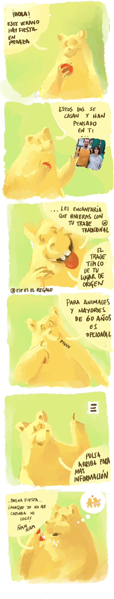

Sábado 23 de Agosto en Proaza, Asturias patria querida. Alrededor de mediodía, hora aún por fijar.
Número teléfono taxi Proaza Kike: 683526937
Número teléfono taxi Proaza Nedi: 671773776
Número teléfono taxis Oviedo : 985252500
* En 2024 ampliaron horarios durante el verano. Si esto se repite en 2025, actualizaremos la información.
IMPORTANTE: Este año hay vuelos directos Jerez-Oviedo.
Si vienes en coche desde el sur recomendamos llegar hasta Oviedo por la autovía, tomar la A63 dirección Grado - La Espina y después la N634 dirección Trubia y continuar hasta Proaza.
Para los menores de 60 años la etiqueta es el traje tradicional de tu lugar de origen. Éste es también el regalo :-). No es un disfraz, ni tu traje preferido, es un traje tradicional.
La asistencia está restringida a mayores de 16 años, con la excepción de aquellos bebés que tengan que estar con sus padres.
Si te quieres quedar más días, estaremos en Asturias la siguiente semana. Para los que se queden planeamos organizar algunas actividades (a partir del lunes ;-) ).
Por favor, responde en el siguiente enlace para ayudarnos a preparar todo lo mejor posible:
Confirma aquí tu asistencia